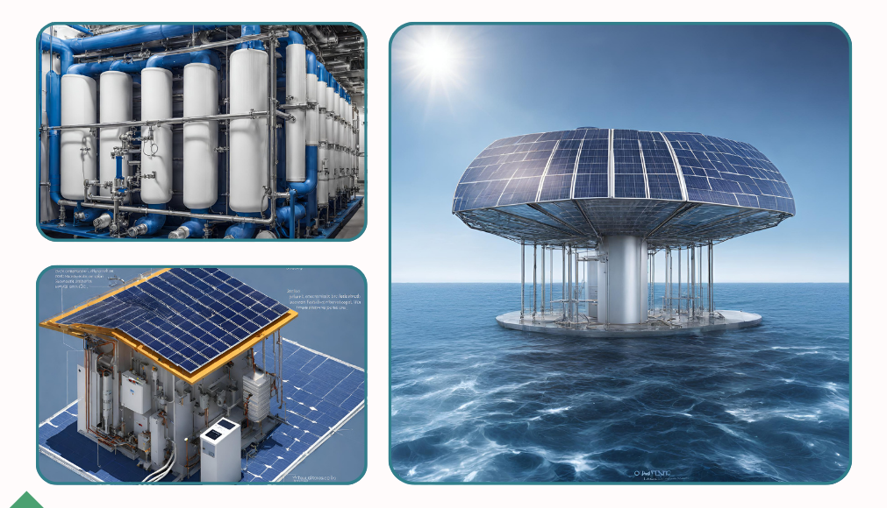

Mühendislik & Yazılım Projeleri

Uzaktan Kontrol ile Güneş Enerjili Su Arıtma SistemiTÜBİTAK
IOT
Arduino
Gömülü Sistem
Yenilenebilir enerji (güneş) kullanarak su kıtlığını önlemeyi hedefleyen, düşük maliyetli ve sürdürülebilir su arıtma çözümüdür. Toplulukların içme suyuna erişimini sağlamaya odaklanılmıştır. **Proje Rolüm: Yazılımcı Gönüllüsü**
Daha Fazla Bilgi Alİşbirliği İçin Hazır mısınız?
Yeni projelerinizde teknolojiyi ve tasarımı birleştirmek için benimle iletişime geçin.